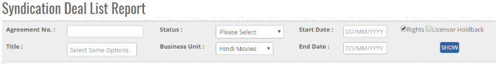
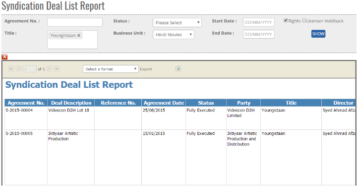


	<section>
		<article>
			<h2>Syndication Deal list report<span></span></h2>
			<div>
				<p></p>

				<p>Syndication Deal list report is where user can check the status of Single/Multiple Syndication Deal Record, enlisting details for the same.</p>

				<div class="triangle-border top">				
					
				</div>

				<p>- As shown in the above Image, Select "<b>Title</b>" from drop down, user can select Single or Multiple Titles</p>

				<p>- Reports will come according to "<b>Business Unit</b>" </p>

				<p>- User has option to select on "<b>Rights</b>" and "<b>Licensor Holdback</b>". If user wants to check reports including both then user has to select Both Option or any Single Option as per user requirement. <b>(Not mandatory)</b></p>

				<p>- User has the Option to select "<b>Start Date</b>" And "<b>End Date</b>" Of rights period.</p>

				<p>- <b>Status:</b> Status by default will be as "<b>Fully Executed</b>"</p>

				<p>- <b>Agreement No:</b> Agreement Number is a unique value automatically assigned to each deal. (If user want to search any Acquisition Deal by Agreement number, then enter agreement No in the text box and click on search button, user will get record of particular agreement number deal)</p>
																			   
				<p>* If user select only Rights then Rights of all the titles selected will be displayed in the Report.</p>

				<p>* If user select Reverse Hold-back then all Holdback Record will be displayed along with the Rights.</p>

				<p>* If user select "<b>Nothing</b>", and clicks on "<b>Show</b>" button then all records will be displayed in reports based on Business Unit with all workflow status Like Approved, amended, Decline, waiting for authorization.</p>

				<div class="triangle-border top">				
					
				</div>

				<p>- Click on <b>Show</b> button to get reports status Of Syndication Deal List Reports (as shown in above image)</p>

				<p>- User can generate the report in <b>Excel</b> by clicking on Export Button and clicking on Excel in the drop-down.</p>
				
			</div>
		</article>
	</section>